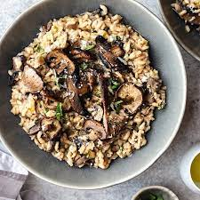

Mushroom Risotto

Description
Ingredients
- 1 quart mushroom stock (or vegetable stock or chicken stock)
- 4 tablespoons unsalted butter, divided
- 1 cup fresh mushrooms, sliced
- 1 tablespoon vegetable oil
- 1 medium shallot (or small onion), chopped (about 1/2 cup)
- 1 1/2 cups arborio rice
- 1/2 cup white wine
- 1/4 cup grated Parmesan cheese
- 1 tablespoon Italian parsley, chopped
- Kosher salt, to taste
Steps
- Gather the ingredients.
- Heat the stock to a simmer in a medium saucepan, then lower the heat so that the stock just stays hot.
- Melt 1 tablespoon of the butter in a sauté pan and sauté the sliced mushrooms until they're soft. Remove from heat and set aside.
- In a large, heavy-bottomed saucepan, heat the oil and 1 tablespoon of the butter over medium heat. When the butter has melted, add the chopped shallot or onion. Sauté for 2 to 3 minutes or until it is slightly translucent.
- Add the rice to the pot and stir it briskly with a wooden spoon so that the grains are coated with the oil and melted butter. Sauté for another minute or so, until there is a slightly nutty aroma, but don't let the rice turn brown.
- Add the wine and cook while stirring until the liquid is fully absorbed.
- Add a ladle of hot stock to the rice and stir until the liquid is fully absorbed. When the rice appears almost dry, add another ladle of stock and repeat the process.
- Note: It's important to stir constantly to prevent scorching, especially while the hot stock gets absorbed, and to add the next ladle as soon as the rice is almost dry.
- Continue adding ladles of hot stock and stirring the rice while the liquid is absorbed. As it cooks, you'll see that the rice will take on a creamy consistency as it begins to release its natural starches.
- Continue adding stock, a ladle at a time, for 20 to 30 minutes or until the grains are tender but still firm to the bite, without being crunchy. When you're down to your last few ladles of stock, add the cooked mushrooms.
- If you run out of stock and the risotto still isn't done, you can finish the cooking using hot water. Just add the water as you did with the stock, a ladle at a time, stirring while it's absorbed.
- Stir in the remaining 2 tablespoons butter, the Parmesan cheese, and the parsley and season to taste with kosher salt.